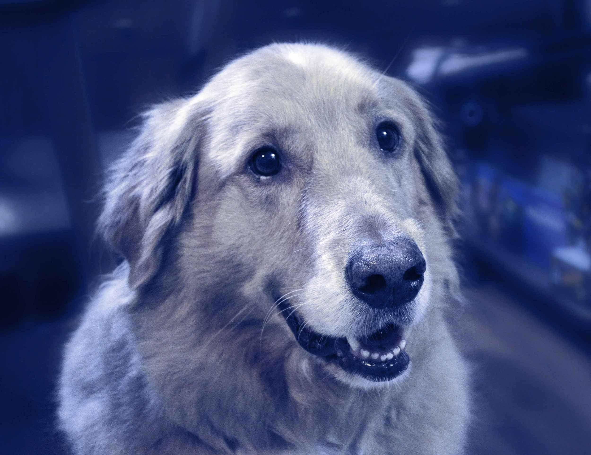

Meet Chewy
Our mandate is to rescue lost, stray or abandoned pet animals.
The Arnprior & District Humane Society is a no-kill shelter that takes in animals from Arnprior and the surrounding area. We are a non-profit organization supported through fundraising events, sponsor assistance, and kind donations. We are dedicated to finding loving, forever homes for abused, abandoned and neglected animals.